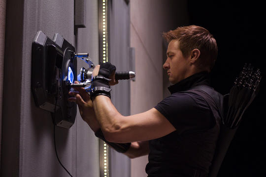
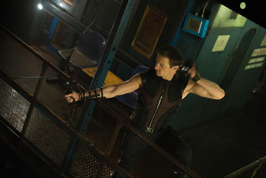

Full Name: Clint Barton
Place Of Birth: New York
Alignment: Good
Gender: Male
Race: Human
Intelligence: 100%
Strength: 45%
Speed: 48%
Durability: 45%
Power: 10%
Combat: 78%
Little is known about the S.H.I.E.L.D. agent known as Hawkeye or his origins. He was also instrumental in bringing over Natasha Romanoff, AKA Black Widow, to the side of S.H.I.E.L.D, sparing her life and offering her a path to redemption. For his extraordinary abilities, he was recruited by Nick Fury to be part of the Avengers Initiative.
As one of S.H.I.E.L.D.’s best agents, the World’s greatest marksman, an expert acrobat, military-trained combatant, master assassin, a master tactician and spy, and an Avenger, Barton can stand toe-to-toe with some of the best fighters around. Hawkeye uses traditional weapons as well as high-tech ones, with a strong affinity for his archery bows.
|

|

|